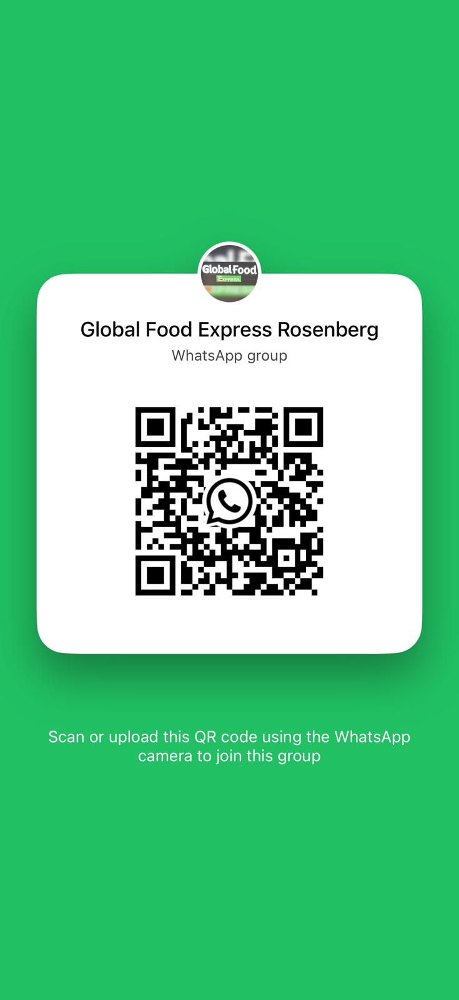
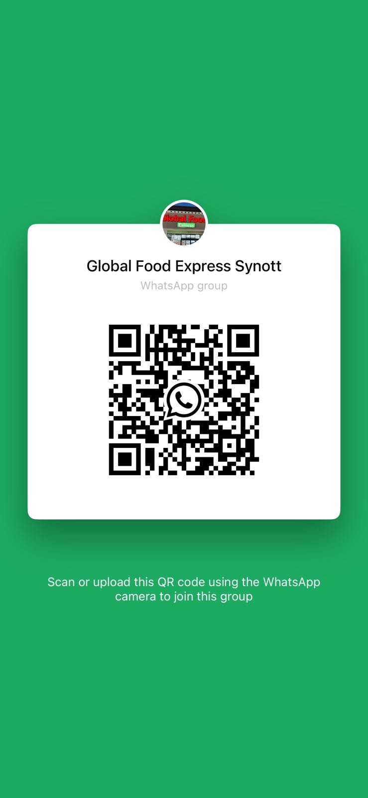

01
01Familiar flavors. Fresh discoveries.
A world of
flavor.
Close to home.
From the ingredients you grew up with to the favorites you’ll discover next. Your neighborhood destination for Indo-Pak and Mediterranean groceries.
100%
Zabiha HalalTrusted products. Familiar flavors.
GLOBALLY INSPIRED.Locally loved.
A basket full of possibilities
Good food starts
with great ingredients.
The essentials for everyday meals.
The special ingredients that make them yours.
01 02
02Spices & masalas
Bring your recipes to life with familiar blends and bold aromatics.
Find your store ↗ 03
03 04
0405
Frozen favorites
Breads, snacks, ready-to-cook meals and desserts.
06
↗Snacks & sweets
Biscuits, imported treats, drinks and little moments of joy.
TRUSTED CHOICES100%ZABIHA HALALFOR YOUR FAMILY
At the heart of what we do
Quality you know.
Values you share.
Food brings us together. We’re proud to serve local families with Indo-Pak and Mediterranean favorites, trusted Zabiha Halal products, and helpful service.
✓ Authentic selection✓ Community focused
Your neighborhood, your store
Two stores.
One familiar welcome.
Stop in for your everyday essentials
and a few new favorites along the way.
01 / ROSENBERG↗
Rosenberg
235 Minonite Rd #120
Rosenberg, TX 77469
A little inside scoop.
Join group ↗New arrivals, store news and specials.

02 / SYNOTT · SUGAR LAND↗
Synott
10560 Synott Rd
Sugar Land, TX 77498
Stay close to the good stuff.
Join group ↗New arrivals, store news and specials.

Meet Snack Shack Rosenberg
Grocery run?
Make it a food stop.
Pizza, burgers, shawarma, desi snacks, chai and ice cream. Explore the menu at Snack Shack Rosenberg.
Explore Snack Shack ↗235 Minonite Rd, Suite 150 · Rosenberg

Your neighborhood updates
The good stuff.
Straight to your phone.
Join your store’s WhatsApp group for fresh arrivals, specials and community news.